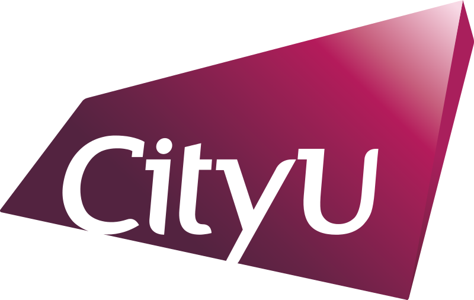
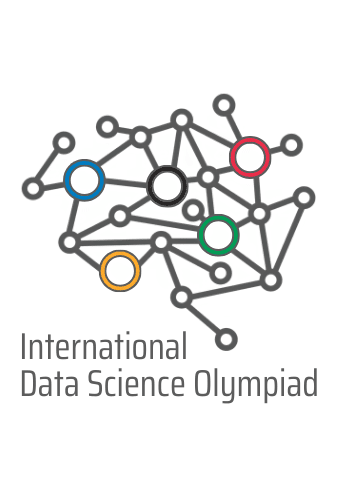
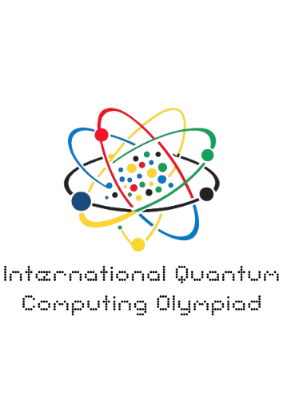

Hi, I'm Kate.I'm a



My Story
Still somewhere in between
I'm Kate - an introvert who somehow keeps ending up in the middle of people, projects, and the technology meant to connect them.
It wasn't the plan. But every project I've landed brings me back to it.
Read my storyMy Work
Where I keep ending up
Not one title - three through-lines that keep showing up in the work.
Tech & Systems
IT project coordination, systems thinking, and translating what's technical into what's usable - the work behind UOB, JPMC, and KBI's operations.
See the workEvents & Projects
Planning and running things end-to-end - from the game plan to the detail everyone else forgot.
See the workPeople & Words
Connecting the right people to the right opportunities, and writing the words that make ideas land - CVs, bios, brand copy.
Work with meMy Notes
Recent Thinking
Notes from along the way - unfinished thoughts, made public on purpose.